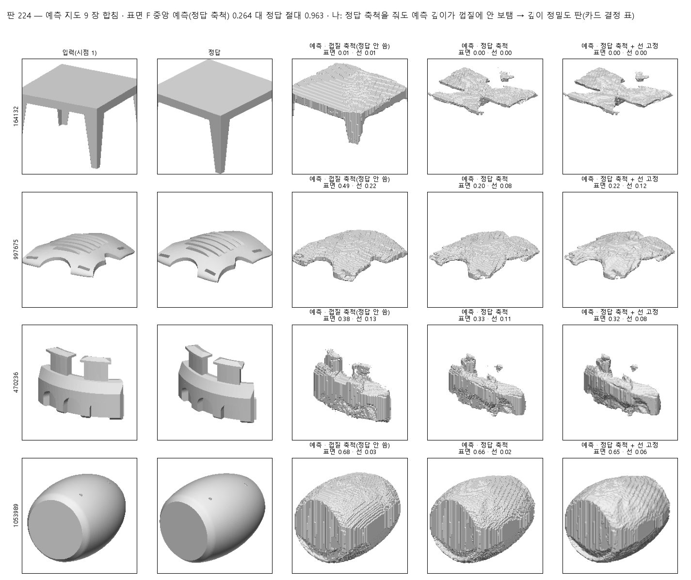

m1_tr0224_h000_예측합치기
예측한 지도(tr222 망)로 9 시점을 합친 3D 는 정답 지도로 합친 3D 에 얼마나 다가가나?
판정 · 나 — 예측 정답축척 표면 F 중앙 0.264 < 예측실루엣 0.372 + 0.01 · 정답절대 0.963 · 정답절대 τ4 2표 0.599(합치기 방식이 깎는 몫) · 껍질축척 0.307 · 선 정답 0.367 대 예측 0.064 · 선고정 − 다듬기 +0.012 · 130 모델(2 빈 점유) → 깊이 정밀도 판(먼저 정답 깊이 + 잡음 1 · 2 · 5 % 로 깊이 목표선)
결정 표(돌리기 전에 정함)
- 만약 예측 정답축척 표면 F 중앙 ≥ 정답절대 − 0.03
다음 축척만 풀리면 예측 지도로도 표면은 천장 근처 → 축척 찾기 판 · 선 쪽(선고정 대 다듬기) - 만약 예측 정답축척 < 예측실루엣 + 0.01(정답 축척을 줘도 예측 깊이가 껍질에 거의 안 보탬)
다음 깊이가 1 % 자에 쓰기엔 거칢 → 깊이 정밀도 판(Depth Anything 깊이 · 깊이 해상도 · 다시점 맞춤 깊이 중 무엇이 1 % 에 다가가나) - 만약 그 사이
다음 실루엣 · 깊이 · 시점(위 · 아래 고도) 중 어느 쪽이 깎는지 가르는 판
분석
한 줄로
물음: 예측한 지도(tr222 망)로 9 시점을 합친 3D 는 정답 지도로 합친 3D 에 얼마나 다가가나?
답: 한참 못 미친다(결정 표 「나」). 표면 F 중앙값이 정답 지도로 합치면 0.96 인데, 예측 지도로 합치면 0.26 이다. 축척(상대 깊이를 절대로 바꾸는 두 숫자)을 정답에서 줘도 그렇다. 오히려 예측 실루엣만으로 깎은 껍질(0.37)보다도 낮다. 예측 깊이는 1 % 자로 합치기엔 너무 거칠다. 윤곽 0.81 은 쓸 만했지만, 다음 병목은 깊이의 정밀도다.
왜 이 판을 했나
장마다 지도 단계는 tr222 · 223 에서 얼렸다(실물 윤곽 0.81 · 학습량도 원근도 손잡이 아님). 「0.81 이 쓸 만한가」 는 그 지도를 합친 3D 로만 답할 수 있다. tr215 는 정답 지도 9 장을 합치면 표면 0.976 이 나왔다. 같은 일을 예측 지도로 했다.
바꾼 것 하나
합치는 지도를 정답에서 예측으로 바꿨다. 모델 132 개(tr215 와 같음)마다 9 시점 렌더를 tr222 망에 넣어 실루엣 · 상대 깊이 · 모서리를 뽑았다. 같은 128³ 격자에서 깎아 합쳤다. 예측 깊이는 오차가 커서 tr212 의 엄격 깎기(반 칸 · 한 시점만 앞이라 해도 깎음) 대신, 「4 칸 넘게 앞」 이라는 시점이 둘 이상일 때만 깎았다(돌리기 전 미리 정함).
결과

| 표면 F 중앙(130 모델) | 값 | 무엇을 뜻하나 |
|---|---|---|
| 정답 지도 · 엄격 깎기 | 0.963 | 천장(tr215 0.976 과 비슷) |
| 정답 지도 · 오차 견디는 깎기(τ 4 · 2 표) | 0.599 | 합치기 방식이 깎는 몫 |
| 예측 실루엣만(껍질) | 0.372 | 깊이 없이 |
| 예측 실루엣 + 예측 깊이(정답 축척) | 0.264 | 판정 갈래 |
| 예측 + 예측 깊이(껍질 축척 · 정답 안 씀) | 0.307 | |
| 정답 크기 상자 | 0.149 | 바보 |
표면 F 는 결과 면의 점이 정답 면에서 크기의 1 % 안에 있는 비율(과 그 반대)을 합친 값이다. 선 F(모서리)는 정답 0.367, 예측 0.064 다. 예측 2D 모서리로 꼭짓점을 고정해 다듬어도 +0.012 뿐이었다.
왜 이렇게 나왔나
확인한 것
- 정답 축척을 줘도 예측 깊이를 넣으면 껍질보다 나빠진다(0.264 대 0.372). 깊이 오차 때문에 진짜 물체가 깎여 나간다. 그림의 탁자는 다리와 상판 일부가 사라졌다. 깎기 조건을 느슨하게 해도(τ 8 칸 · 3 표) 0.339 로 껍질을 못 넘는다.
- 예측 깊이 오차는 tr217 시험에서 상대 0.05 안팎(깊이 범위의 5 %)이다. 표면 F 의 허용은 크기의 1 % 다. 깊이가 다섯 배 거칠다.
- 오차를 견디는 깎기는 정답 깊이로도 0.963 → 0.599 로 떨어진다. 지금 합치기 방식은 「정확한 깊이로 엄격하게」 아니면 「느슨하게 덜 깎기」 둘뿐이라, 거친 깊이를 평균 내어 다듬는 길이 없다.
- 축척을 껍질에서 찾은 쪽(0.307)이 정답 축척(0.264)보다 높다. 껍질 앞면에 맞추면 깊이가 앞쪽으로 치우쳐 덜 깎이기 때문으로 보인다. 축척 찾기보다 깊이 오차가 먼저다.
짐작 (아직 확인 안 함)
- 위 · 아래 시점(고도 ±89.5°)은 학습에 없던 고도다. 그 둘을 뺀 7 장도 0.232 로 비슷해서 주된 까닭은 아닌 듯하다.
- 그림의 세로 줄무늬는 시점마다 깊이가 조금씩 어긋나 칸 기둥 단위로 깎인 흔적으로 보인다.
한계
- 시험 3 모델로 합치기 방식을 바꾼 뒤 돌렸다(카드에 적음). τ · 표 설정은 미리 정한 하나로 판정했고, 다른 설정은 같이 적었다(어느 것도 껍질을 못 넘음).
- 판정 글을 하나 고쳤다. 코드에 남은 옛 초안(「Depth Anything 깊이로」)이 카드 결정 표의 「나」 글(「깊이 정밀도 판」)과 달라 카드 글로 맞췄다. 숫자와 갈래는 그대로다.
- 입력은 우리 렌더러 렌더(실물 사진 아님)라 이 숫자는 렌더 쪽 위치다. 실물이면 더 나빠질 것이다.
- 2 모델은 예측 점유가 비어 오류(130 모델로 잼).
배운 것과 다음
장마다 윤곽은 쓸 만하지만, 깊이는 1 % 자로 합치기엔 다섯 배 거칠다. 다음 병목은 깊이의 정밀도와, 거친 깊이를 평균 내는 합치기다.
- (결정 표 「나」) 깊이 정밀도 판 — 먼저 학습 없이 「깊이가 얼마나 정확해야 하나」 를 잰다. 정답 깊이에 상대 1 · 2 · 5 % 잡음을 넣고, 엄격 깎기와 평균 내는 합치기(TSDF 같은 것)로 합쳐 표면 F 가 어디서 무너지는지 본다. 그 선이 깊이의 목표선이 된다.
- 그다음 그 목표선에 다가가는 후보를 잰다. Depth Anything 깊이 · 깊이 해상도 · 여러 시점이 서로 맞게 다듬은 깊이 중 무엇인지 본다.
- 선 쪽(2D 모서리로 3D 모서리 세우기)은 깊이가 풀린 뒤에 다시 본다. 지금은 +0.012 라 판단할 수 없다.
판 기록
- 카드 · 코드 커밋 063f299(돌리기 전) · 지도 GPU 둘 2 분 · 잼 일꾼 넷 19 분 · 판정 잼.json · 그림 그림.png · 모델별 out/설명/캐드부품/모델224/(git 밖).